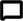

<ion-tabs (ionTabsWillChange)="changeTab($event)">
  <ion-header>
    <ion-toolbar
      style="padding: 5px 15px; --background: #f7f7fa; --border-width: 0px"
    >
      <ion-avatar slot="start" style="position: relative" (click)="showMenu()">
        
        <div class="avTest"></div>
      </ion-avatar>
      <ion-title>
        
      </ion-title>
      <ion-buttons slot="end">
        <ion-button>
          
          
        </ion-button>
      </ion-buttons>
    </ion-toolbar>
  </ion-header>
  <div class="icon-button inner-center-btn">
    <div class="circleTab">
      <ion-fab
        vertical="bottom"
        horizontal="center"
        slot="fixed"
        style="border-radius: 23px"
      >
        <ion-fab-button>
          
        </ion-fab-button>
        <ion-fab-list
          side="start"
          (click)="launch('youtube')"
          style="top: -30px"
        >
          <ion-fab-button>
            <ion-icon name="logo-youtube"></ion-icon>
          </ion-fab-button>
        </ion-fab-list>
        <ion-fab-list side="top" (click)="launch()">
          <ion-fab-button>
            <ion-icon name="logo-youtube"></ion-icon>
          </ion-fab-button>
        </ion-fab-list>
        <ion-fab-list side="end" style="top: -30px">
          <ion-fab-button>
            <ion-icon name="logo-youtube" (click)="launch('gmail')"></ion-icon>
          </ion-fab-button>
        </ion-fab-list>
      </ion-fab>
    </div>
  </div>
  <ion-tab-bar slot="bottom" style="position: absolute">
    <ion-tab-button tab="tab1">
      
    </ion-tab-button>

    <ion-tab-button tab="tab2"> </ion-tab-button>

    <ion-tab-button tab="tab3">
      
    </ion-tab-button>
  </ion-tab-bar>
</ion-tabs>
